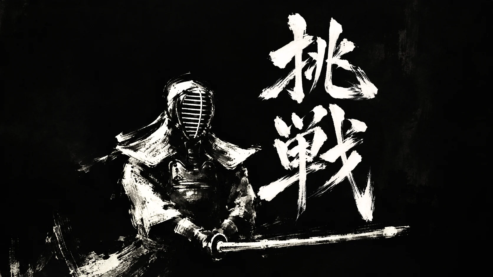
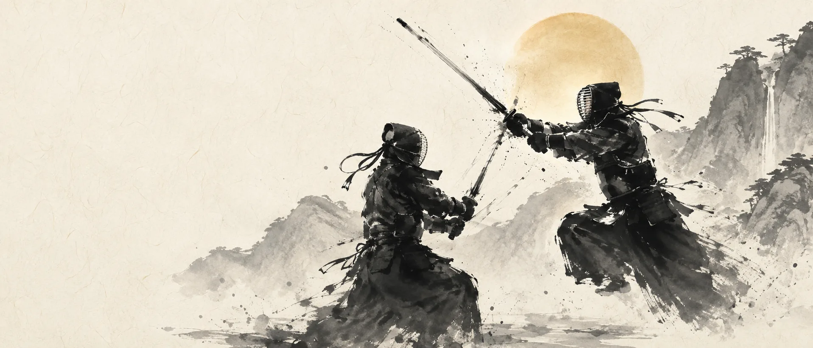

一瞬に、すべてを懸ける。
MIYAZAKI KENDO FEDERATIONWhere stillness becomes strength.
礼を重んじ、技を磨き、心をつなぐ。
神話のふるさと宮崎から、剣道の未来へ。
SCROLL TO EXPERIENCE
MIYAZAKI / LAND OF MYTH & LIGHT
光の国で、
剣を磨く。
神話の舞台、宮崎。
日向の光、深い山々と静かな空気。
宮崎の自然と文化は、
剣道に欠かせない「静」と「動」の
精神と響き合います。
MYTHLIGHTNATURESPIRIT
ROAD TO 2027
日本のひなた宮崎国スポ 2027
Hinata MiyazakiNational Sports Festival 2027
剣道競技は高千穂町で開催予定。
宮崎から全国へ、そして世界へ。
大会に向けた歩みを
このサイトから発信します。
—DAYS TO GO